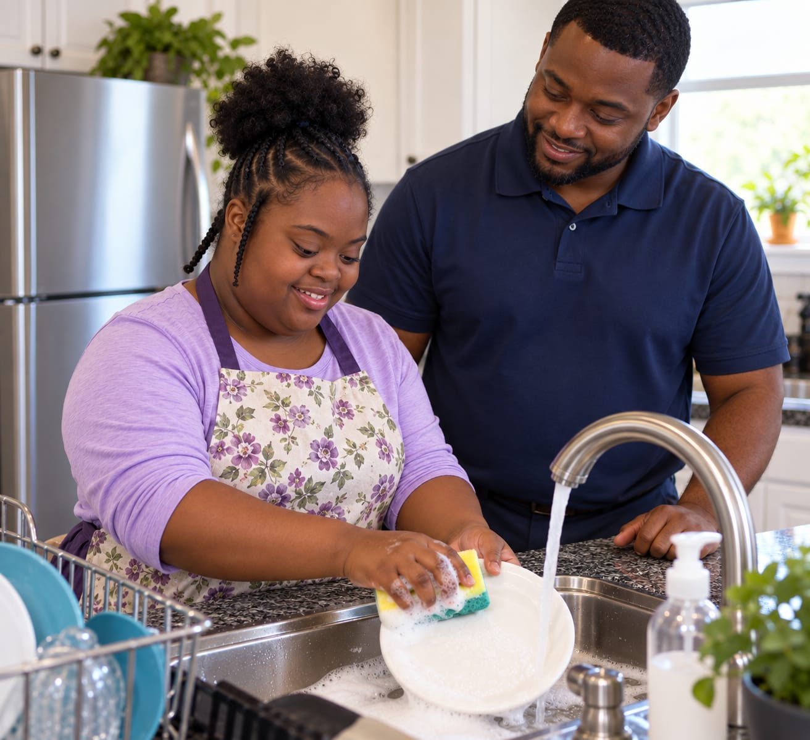
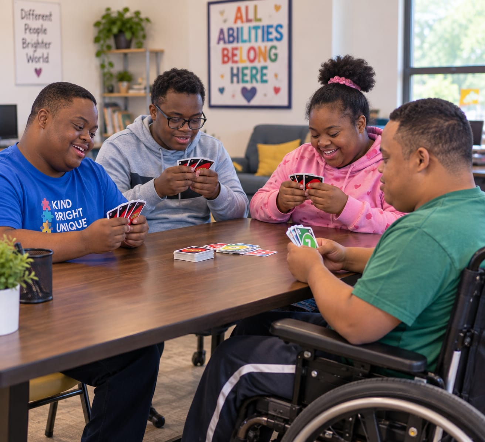
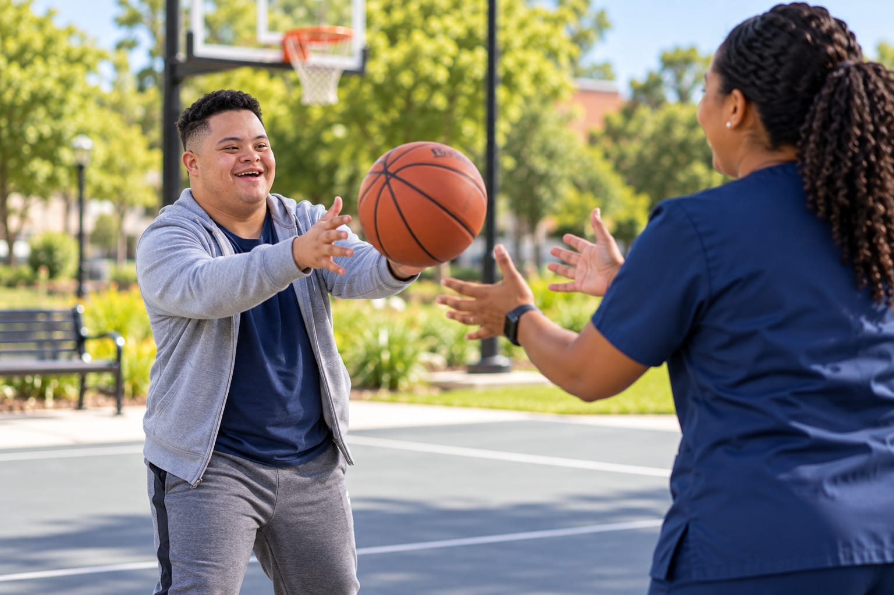
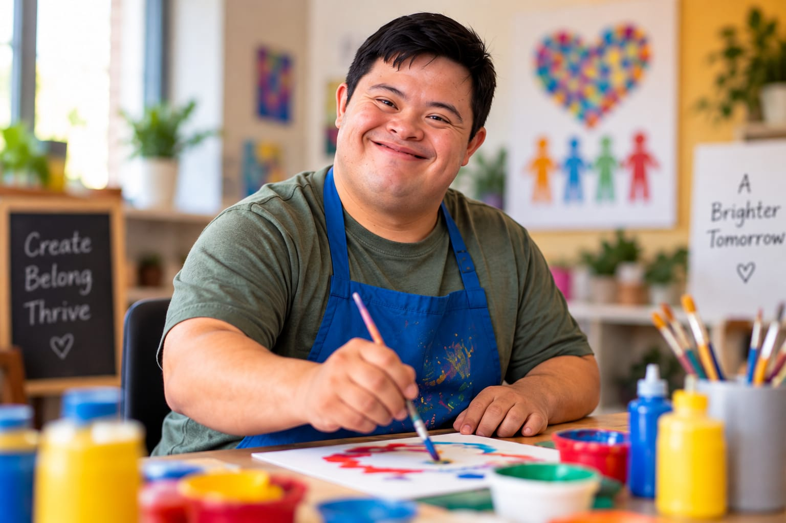

Homemaker Personal Care (HPC)
Individualized support to help individuals remain safe, healthy, and independent at home and in the community.
Compassionate, person-centered home and community based services for individuals with intellectual and developmental disabilities, seniors, veterans, and anyone who needs a hand maintaining their independence.

Aston Global Healthcare Services is an Ohio-based provider of home and community based services. We help individuals live safely, independently, and meaningfully in their own homes and communities.
We work alongside individuals, families, guardians, county Boards of Developmental Disabilities, Service & Support Administrators, nurses, and other professionals to build support systems that hold up day to day, week to week.
More about us
Every service below is built around the individual — their goals, their routines, their preferences. Support is delivered according to what is authorized in each person's service plan.
Individualized support to help individuals remain safe, healthy, and independent at home and in the community.
Temporary support and relief for individuals and the family members or caregivers who support them.
Technology-supported oversight that helps individuals maintain independence while still receiving appropriate monitoring.
Help living as independently as possible, with the right amount of assistance in the right places.
Consistency matters. We work to keep the same familiar faces in your routine.
Dependable backup staffing so services don't stop when someone is out.
Services built around the individual — not the other way around.
We work closely with families, guardians, SSAs, county Boards of DD, and nurses.
Support looks different for every person we work with — shaped by their goals, routines, relationships, and the life they want to build outside the home, not by a standard template.



“When you hand over part of your child’s daily life to someone else, it’s hard not to worry. From the start, Aston Global took the time to learn who my child is: what they enjoy, how they like their day to go, and what they’re working toward. The staff who come to our home are consistent, so my child isn’t meeting a stranger every week, and that familiarity has made a real difference. They show up when they say they will, they treat my child with respect, and when someone is out there is always a plan in place. I don’t have to scramble, and I don’t have to chase anyone for answers.”
“My brother has always known what he wants, and as his brother, I wanted to be sure the people supporting him would listen. Aston Global does. His routines, his goals, and his preferences come first, and the team helps him build the life he’s asking for rather than fitting him into a schedule. They also keep our family in the loop. When I have a question or a concern, someone picks up the phone and follows through. Our whole family feels more at ease.”
“Coordinating services for the people I support means I depend on providers who communicate. Aston Global is one of the ones I can count on. They respond quickly to referrals, they stay in touch with the whole team, and they follow the person’s plan as it’s written. Just as important, they keep the individual’s goals at the center of what they do. When there’s a change or a question, I hear about it early instead of after the fact.”
“Working with Aston Global has been a smooth experience from the first referral. Their team is prompt, organized, and easy to reach, and they take the time to understand what each person needs before services begin. They coordinate well with families, guardians, and other members of the team, and they carry out the service plan the way it was designed. When I’m helping a family look for a provider they can trust, I feel comfortable putting Aston Global on the list.”
Whether you're a family looking for support or an SSA making a referral, we'll walk you through the next step.
Automated answers based on common questions. For anything specific, call (419) 245-8113.